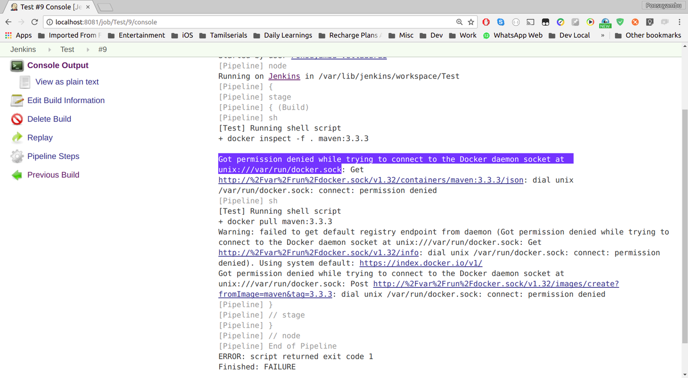

Docker: Got permission denied while trying to connect to the Docker daemon socket at unix:///var/run/docker.sock
I am new to docker. I just tried to use docker in my local machine(Ubuntu 16.04) with Jenkins.
I configured a new job with below pipeline script.
node {
stage('Build') {
docker.image('maven:3.3.3').inside {
sh 'mvn --version'
}
}
}
But it fails with this error:
Got permission denied while trying to connect to the Docker daemon socket at unix:///var/run/docker.sock

Answer
If using jenkins
The user jenkins needs to be added to the group docker:
sudo usermod -a -G docker jenkins
Then restart Jenkins.
Otherwise
If you arrive to this question of stack overflow because you receive this message from docker, but you don't use jenkins, most probably the error is the same: your unprivileged user does not belong to the docker group.
You can do:
sudo usermod -a -G docker [user]
Insert your user name where [user] is.
You can check it was successful by doing grep docker /etc/group and see
something like this:
docker:x:998:[user]
in one of the lines.
Then change your users group ID to docker (to avoid having to log out and
log in again):
newgrp docker